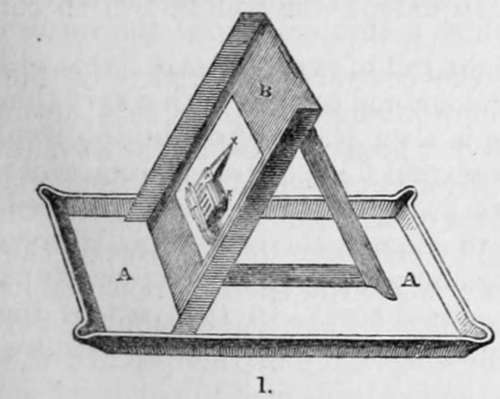

Chapter II. Heliography. The Process Of M. Niepce
Description
This section is from the book "A Manual Of Photography", by Robert Hunt. Also available from Amazon: A Manual of Photography.
Chapter II. Heliography. The Process Of M. Niepce
M. Niepce was the first inquirer who appears to have produced permanent pictures by the influence of the sun's rays. This process—Heliography—is in many respects peculiar, which renders it necessary, although his preparation was only acted on by an exposure of many hours to full sunshine, to give a particular account of it ; the more so, as some points of considerable interest require further elucidation. I The substance employed by M. Niepce was asphaltum, or bitumen of Judea, He thus directs its preparation :—" I about half fill a wine-glass with this pulverized bitumen ; I pour upon it, drop by drop, the essential oil of lavender,* until the bitumen is completely saturated. I afterwards add as much more of the essential oil as causes the whole to stand about three lines above the mixture, which is then covered and submitted to a gentle heat until the essential oil is fully impregnated with the colouring matter of the bitumen. If this varnish is not of the required consistency, it is to be allowed to evaporate slowly, without heat, in a shallow dish, care being taken to protect it from moisture, by which it is injured, and at last decomposed. In winter, or during rainy weather, the precaution is doubly necessary. A tablet of plated silver, or well cleaned and warm glass, is to be highly polished, on which a thin coating of the varnish is to be applied cold, with a light roll of very soft skin : this will impart to it a fine vermilion colour, and cover it with a very thin and equal coating. The plate is then placed upon heated iron, which is wrapped round with several folds of paper, from which by this method all moisture had been previously expelled. When the varnish has ceased to simmer, the plate is withdrawn from the heat, and left to cool and dry in a gentle temperature, and protected from a damp atmosphere. In this part of the operation a light disk of metal, with a handle in the centre, should he held before the mouth, in order to condense the moisture of the breath".
* The English oil of lavender is too expensive for this purpose. An article sold as the French oil of lavender, redrawn, is very much cheaper, and answers in every respect as well, if not better.
The plate thus prepared is now in a fit state for use, and may be immediately fixed in the correct focus of the camera. After it has been exposed a sufficient length of time for receiving the impression, a very faint outline alone is visible. The next operation is to bring out the hidden picture, which is accomplished by a solvent.
This solvent must be carefully adapted to the purposes for which it is designed: it is difficult to fix with certainty the proportions of its components, but in all cases it is better that it be too weak than too strong ; in the former case the image does not come out strongly; in the latter it is completely destroyed. The solution is prepared of one part—not by weight, but volume—of the essential oil of lavender, poured upon ten parts, by measure also, of oil of white petroleum. The mixture which is first milky, becomes clear in two or three days. This compound will act until it becomes saturated with the asphaltum, which state is readily distinguished by an opaque appearance, and dark brown colour. A tin vessel somewhat larger than the photographic tablet, and one inch deep, must be provided. This is to have as much of the solvent in it as will cover the plate. The tablet is plunged into the solution, and the operator, observing it by reflected light, begins to see the images of the objects to which it has been exposed slowly unfolding their forms, though still veiled by the gradually darkening supernatant fluid. The plate is then lifted out, and held in a vertical position, till as much as possible of the solvent has been allowed to drop away. When the dropping has ceased, we proceed to the last, and not the least important operation, of washing the plate.
This is performed by carefully placing the tablet upon a board, b, fixed at a large angle, in the trough a a, the supports being joined to it by hinges, to admit of the necessary changes of inclination, under different circumstances : two small blocks, not thicker than the tablet, are fixed on the board, on which the plate rests. Water must now be slowly poured upon the upper part of the board, and allowed to flow evenly over the surface of the picture. The descending stream clears away all the solvent that may yet adhere to the varnish. The plate is now to be dried with great care by a gentle evaporation : to preserve the picture, it is requisite to cover it up from the action of light, and protect it from humidity.
The varnish may be applied indifferently to metals, stone, or glass; but M. Niepce prefers copper plated with silver. To take copies of engravings, a small quantity of wax is dissolved in essential oil of lavender, and added to the varnish already described : the engraving, first varnished over the back, is placed on the surface of the prepared tablet, face towards it, and then exposed to the action of the light. In the camera obscura an exposure of from six to eight hours, varying with the intensity of light, is required; while from four to six hours is necessary to produce a copy of an engraving. The picture, in the first instance, is represented by the contrast between the polished silver and the varnish coating. The discoverer afterwards adopted a plan of darkening the silver by iodine, which appears to have led the way to Daguerre's beautiful process. To darken the tablet, it was placed in a box in which some iodine was strewed, and watched until the best effect was produced. The varnish was afterwards removed by spirit of wine.
Of the use of glass plates M. Niepce thus speaks :—" Two experiments in landscape upon glass, by means of the camera, gave me results which, although imperfect, appear deserving of notice, because this variety of application may be brought more easily to perfection, and in the end become a more interesting department of heliography.
Continue to:
- prev: Early Researches Ox The Chemical Action Of The Solar Rays. Part 3
- Table of Contents
- next: Heliography. The Process Of M. Niepce. Continued